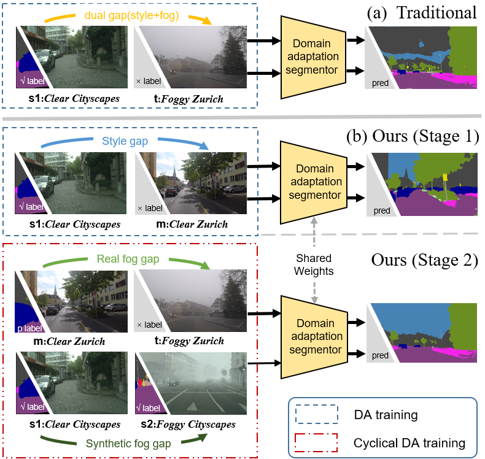
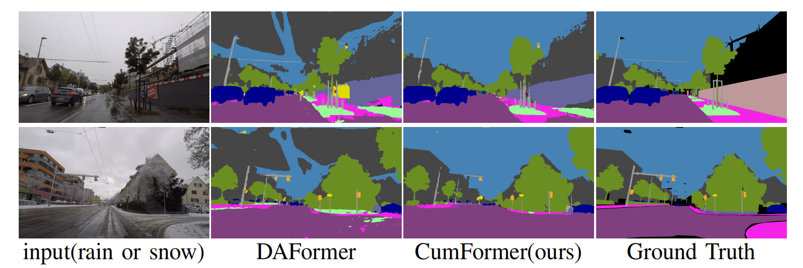

CumFormer提出了一种创新的域适应方法，通过逐步解耦域间差距来实现雾天场景的精确语义分割。该方法引入中间域，将源域到目标域的适应过程分解为两个阶段，分别处理风格差异和雾气退化问题，显著提高了模型在复杂天气条件下的分割性能。
在自动驾驶和视觉导航领域，准确的语义雾景分割（SFSS）对于系统的安全性至关重要。然而，雾气导致的图像模糊和高标注成本，使得在雾天条件下进行语义分割成为一个重大挑战：
为了克服这些挑战，CumFormer通过逐步解耦域间差距，显著提高了雾天场景的语义分割性能。
域适应图像分割: 解决不同域间的图像分割问题，采用无监督、半监督和自监督学习策略。
强大的数据处理: 支持广泛的数据处理和增强技术，提升模型在新域的表现。
configs 目录下的配置文件，以符合具体的应用需求。demo 目录下的示例脚本，观察不同域适应策略的效果。CumFormer通过分阶段的域适应过程，将跨域任务分解为两个关键阶段：
标签参考值用于量化自训练过程中源域标签对目标域伪标签的指导作用。标签参考值的高低决定了自训练的有效性：
$$q^d_C = \frac{\sum_{j=1}^{H \times W} \left[ \max_{c'} T(X^d_C)^{(j, c')} \geq \tau \right]}{H \times W}$$
通过计算目标域伪标签的置信度，可以有效评估自训练的进展和效果。
CumFormer的核心是分阶段自训练策略：
混合损失的计算如下：
$$L = (1-M) \odot L^d_C + M \odot L^i_S$$
通过平衡源域和目标域损失，逐步提升模型在不同域间的适应能力。
我们在ACDC和Foggy Zurich-test (FZ) 数据集上验证了CumFormer的有效性。实验结果显示，CumFormer在这两个数据集上均显著优于现有方法。
| Experiment | Method | Backbone | ACDC | FZ |
|---|---|---|---|---|
| Backbone | - | DeepLabv2 | 33.5 | 25.9 |
| - | RefineNet | 46.4 | 34.6 | |
| - | SegFormer | 47.3 | 37.7 | |
| Dehazing | DCPDN | DeepLabv2 | 33.4 | 28.7 |
| MSCNN | RefineNet | 38.5 | 34.4 | |
| DCP | RefineNet | 34.7 | 31.2 | |
| Non-local | RefineNet | 31.9 | 27.6 | |
| TransWeather | SegFormer | 39.4 | 37.3 | |
| GFN | RefineNet | 33.6 | 28.7 | |
| Synthetic | SFSU | RefineNet | 45.6 | 35.7 |
| CMAda | RefineNet | 51.1 | 46.8 | |
| FIFO | RefineNet | 54.1 | 48.4 | |
| DA-based | LSGAN | DeepLabv2 | 29.3 | 24.4 |
| Multi-task | DeepLabv2 | 35.4 | 28.2 | |
| AdaptSegNet | DeepLabv2 | 31.8 | 26.1 | |
| ADVENT | DeepLabv2 | 32.9 | 24.5 | |
| CLAN | DeepLabv2 | 38.9 | 28.3 | |
| BDL | DeepLabv2 | 37.7 | 30.2 | |
| FDA | DeepLabv2 | 39.5 | 22.2 | |
| DISE | DeepLabv2 | 42.3 | 40.7 | |
| ProDA | DeepLabv2 | 38.4 | 37.8 | |
| DACS | DeepLabv2 | 41.3 | 28.7 | |
| DAFormer | SegFormer | 48.9 | 44.4 | |
| CuDA-Net | DeepLabv2 | 55.6 | 49.1 | |
| Ours | CumFormer | SegFormer | 60.7 | 54.8 |
标签参考值与域间差距的变化关系图，展示了不同域间差距下标签参考值的趋势。随着域间差距的减小，标签参考值显著提高，增强了自训练效果。
CumFormer通过这些创新为未来研究提供了一种新的解决思路，有望在更多视觉任务中得到应用和扩展。